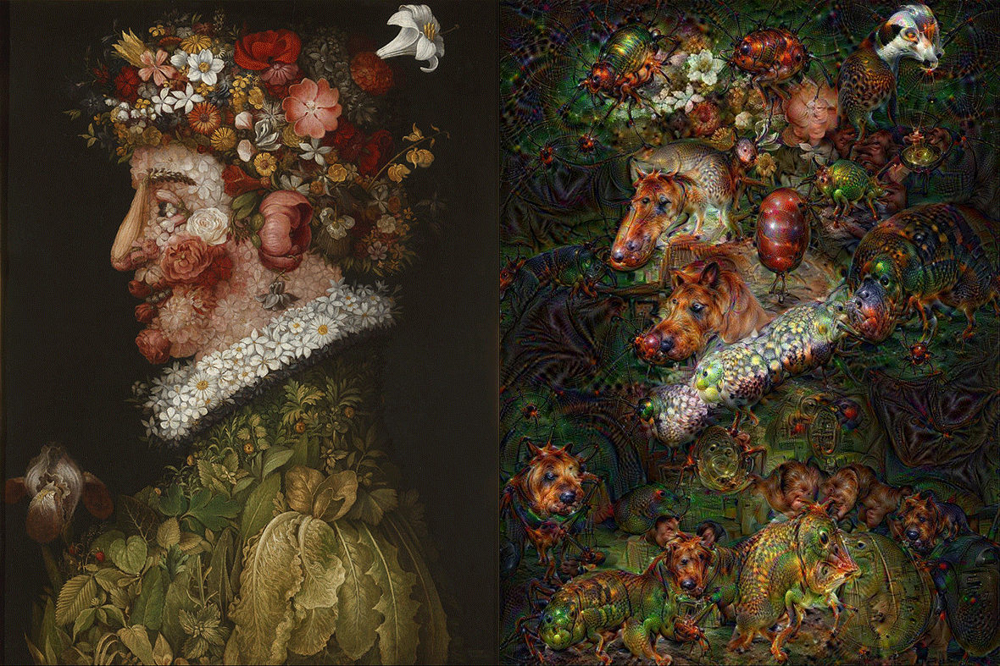
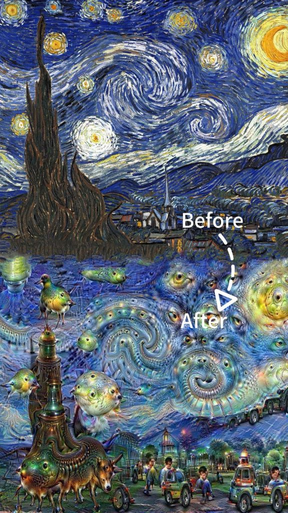

My opinion
Machines can create art. On a superficial level, to a certain extent, machines can create works that seem to have artistic characteristics.

（DeepDream Arcimbolodo Comp（Bellingham, 2019））
Artworks generated by DeepDream based “La Primavera” by Giuseppe Arcimboldo
Take the field of painting as an example.
Google’s artificial intelligence program DeepDream can generate unique images. Because it has accumulated a large database through learning a large amount of image data, it can create paintings that are fantastical, colourful, and have a certain visual impact. These works may be very novel in form, with unique compositions and colour combinations. However, its creation process is based on the analysis and reorganisation of existing image data by algorithms. In other words, the art it creates is not original, but a secondary creation by splitting up the artworks already created by humans (Stony Brook University, n.d.). Furthermore, the pictures generated by DeepDream often look rather strange, and some are even described as creepy, evoking mixed responses from viewers (The Guardian, 2016). While DeepDream outputs are visually striking, they lack the emotional experience, life perception, and intentional expression that human artists convey in the creation process. As one commentator observed, “calling it art would be a little like an artist raising their hand and declaring their paintbrush art” (Stony Brook University, n.d.).
On the contrary, landscape oil paintings created by humans usually reflect the profound personal connection between the artist and the depicted object. Painters draw inspiration from their love for nature, precious memories of specific scenes, and the emotions evoked by these experiences. This highly personalized creative process enables artists not only to capture the external appearance of the scene but also to reveal the inner essence and meaning of the painted object as perceived through their unique perspectives (Arnheim, 1974). Moreover, during the painting process, artists can improvise, integrate, and develop their own styles, fully expressing their emotions and creativity through colours and textures (Gombrich, 1960). Each stroke of the brush carries the artist’s personal story, making the painting full of emotions and authenticity, resonating deeply with the audience. This emotional authenticity contrasts sharply with the algorithm-driven processes of artificial intelligence, which lack such personal intention and experiential depth.

（Starry Night by Vincent van Gogh, 1889. (Source: ‘星夜’, n.d., Wikipedia).，
DeepDream AI Artwork. (Source: O’Neill, 2018, Quartz).）
In contrast, landscape images generated by AI systems like DeepDream, although often visually stunning, lack such profound emotions and narrativity. These images are produced through algorithmic processing and pattern generation, relying on mathematical principles rather than personal experiences or inner inspirations. Although they may arouse the curiosity and amazement of the audience due to their surreal and complex patterns, they are unable to convey the personal stories, intimate connections, or deep emotions that are characteristic of human-created art (Stony Brook University, n.d.; The Guardian, 2016).
This contrast highlights the limitations of machines in the field of artistic creation. Although machines can generate works with an artistic appearance, they lack original thinking, emotional depth, and intentional narrative ability. At best, machines are a powerful tool or medium used to enhance human creative potential. When collaborating with human artists, machines can assist in artistic exploration and provide new techniques or styles that might not be achievable through traditional methods. For example, tools like DeepDream can inspire artists by generating unexpected patterns and compositions, serving as a starting point for further human interpretation and refinement (Galanter, 2016). However, the creative process still fundamentally depends on the artist’s ability to imbue the work with personal meaning, emotions, and intentionality (McCormack et al., 2019).
To sum up, humans are still in control of the core of creation. It is humans who guide the machines with their creativity, emotions and unique perspectives. Therefore, machines are not real creators but auxiliary tools that expand the possibilities of artistic creation. This collaborative relationship emphasizes the irreplaceable role of human experience and wisdom in creating truly meaningful and original works of art.
Bibliography
• Arnheim, R. (1974) Art and Visual Perception: A Psychology of the Creative Eye. Berkeley: University of California Press.
• Gombrich, E. H. (1960) Art and Illusion: A Study in the Psychology of Pictorial Representation. Princeton, NJ: Princeton University Press.
• Stony Brook University (n.d.) ‘Google’s DeepDream and artistic creativity’. Available at: https://www3.cs.stonybrook.edu/~cse352/T12talk.pdf (Accessed: 12 January 2025).
• The Guardian (2016) ‘Google DeepDream: Beautiful and at times terrifying images’. Available at: https://www.theguardian.com/artanddesign/2016/mar/28/google-deep-dream-art (Accessed: 12 January 2025).
• Galanter, P. (2016) ‘Computational aesthetic evaluation: Past and future’, Arts, 5(2), pp. 1–19. Available at: https://www.mdpi.com/2076-0752/5/2/19 (Accessed: 12 January 2025).
• McCormack, J., Gifford, T. and Hutchings, P. (2019) ‘Autonomy, Authenticity, Authorship and Intention in Computer Generated Art’, Proceedings of the 2020 Generative Art Conference. Available at: https://www.generativeart.org (Accessed: 12 January 2025).
• Bellingham, R. (2019) ‘DeepDream Arcimbolodo Comp’, Rick Bellingham. Available at: https://rickbellingham.com/2019/01/15/mindshare/deepdream-arcimbolodo-comp/ (Accessed: 12 January 2025).
• ‘星夜’ (n.d.) Wikipedia. Available at: https://zh.wikipedia.org/zh-cn/%E6%98%9F%E5%A4%9C (Accessed: 12 January 2025).
•O’Neill, P. (2018) ‘If an AI creates a work of art, who owns the rights to it?’, Quartz. Available at: https://qz.com/1054039/google-deepdream-art-if-an-ai-creates-a-work-of-art-who-owns-the-rights-to-it (Accessed: 12 January 2025).